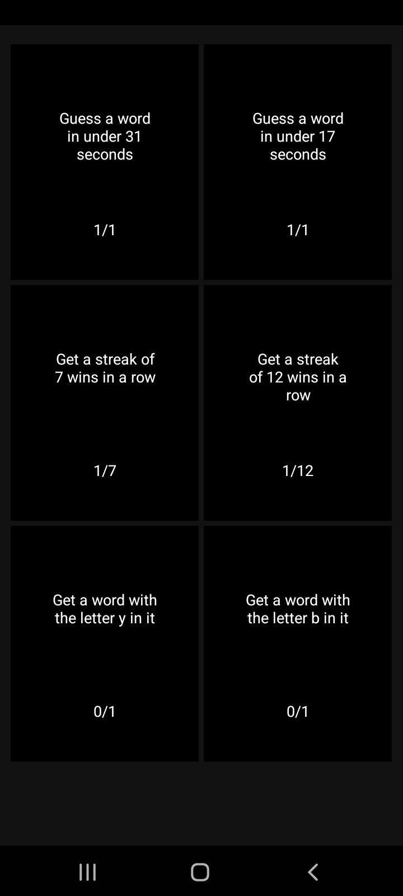

TBlibber blop flibber jabber shibber shabber gibberish! Zippity zoppity zibber zabber flibberdy floo. Wobble wabble dingle dangle mumble jumble higgledy-piggledy. Flibbertigibbet wiggly waggly wuzzletwump, snicker-snack, oodle noodle doodle. Hodgepodge mishmash mishigas, bippity boppity boo. Gobbledygook zoodle-noodle, wackadoodle noodledoodle, brouhaha hullabaloo! Bazinga zonk blabberknock, fiddle-faddle, kerfuffle, fubar.

Hi, I'm Jacob Nelson, and this webpage is my first assignment for Graphical User Interface Programming (COMP.4610) at University of Massachusetts Lowell. This webpage functions as a platform to talk about myself, some recent schoolwork I've done, and some other links you can check out as well.
About Me
As senior computer science student, and I enjoy programming and working on software. I will be earning my Bachelor's Degree in December. I am also a musician, I have been playing guitar for over 10 years and have a two-year degree in Music Performance from Middlesex Community College.
I like to think I have a wide variety of interests and hobbies. I enjoy playing video games, gardening, cooking, brewing coffee, recording music, and traveling any opportunity I get. Hopefully, I can get to a place in my life where I have the time and money to indulge in these hobbies more. Someday, I'd like to have a space in my home dedicated to playing and recording music.
There are a lot of things I want to do after I graduate. For instance, I want to learn more about electrical engineering and circuitry, not only to make myself a better computer scientist, but to be able to build gadgets and fun stuff. For instance, I'd like to build my own guitar effect pedals. I'd also like to build a retro gaming console as well, using a Raspberry Pi running game emulators. Oh, I also want to get into nature photography. Particularly birds. I like birds.
See some of my recent schoolwork below.
Graphics
Computer Graphics I (COMP.4270) was a class I took in the Spring semester of 2023. This was a really interesting and challenging class that teaches fundamental concepts of the computer graphics pipeline using a graphics library called WebGL. Below is one of the homework assignments for that course. This purpose of this assignment was to program the camera controls for an object in a scene. You can use the controls below to change the position and movement of the camera. You can change the camera to either rotate along the edge of a sphere facing the sphere's origin, or to travel along a line given the line's endpoints.
To switch between the sphere and the line camera, use the 'Perspective" selection box. When the sphere option is chosen, you can set the origin of the sphere using the X, Y, Z, numeric entries, as well as the radius. When the line option is chosen, you can define the endpoints of the line using the numeric entries that appear. For both options, you can toggle the animation.
Please note that in WebGL, the canvas has a 3D coordinate system ranging from -1 to 1, so setting the camera to a position outside of that range will cause the object or the camera to clip out of view.
Also, just for fun, I made it so the colors of each face of the object are randomized on page load.
Controls
GuessWord
Blibber blop flibber jabber shibber shabber gibberish! Zippity zoppity zibber zabber flibberdy floo. Wobble wabble dingle dangle mumble jumble higgledy-piggledy. Flibbertigibbet wiggly waggly wuzzletwump, snicker-snack, oodle noodle doodle. Hodgepodge mishmash mishigas, bippity boppity boo. Gobbledygook zoodle-noodle, wackadoodle noodledoodle, brouhaha hullabaloo! Bazinga zonk blabberknock, fiddle-faddle, kerfuffle, fubar.

TBlibber blop flibber jabber shibber shabber gibberish! Zippity zoppity zibber zabber flibberdy floo. Wobble wabble dingle dangle mumble jumble higgledy-piggledy. Flibbertigibbet wiggly waggly wuzzletwump, snicker-snack, oodle noodle doodle. Hodgepodge mishmash mishigas, bippity boppity boo. Gobbledygook zoodle-noodle, wackadoodle noodledoodle, brouhaha hullabaloo! Bazinga zonk blabberknock, fiddle-faddle, kerfuffle, fubar.
Other Stuff
Blibber blop flibber jabber shibber shabber gibberish! Zippity zoppity zibber zabber flibberdy floo. Wobble wabble dingle dangle mumble jumble higgledy-piggledy. Flibbertigibbet wiggly waggly wuzzletwump, snicker-snack, oodle noodle doodle. Hodgepodge mishmash mishigas, bippity boppity boo. Gobbledygook zoodle-noodle, wackadoodle noodledoodle, brouhaha hullabaloo! Bazinga zonk blabberknock, fiddle-faddle, kerfuffle, fubar.